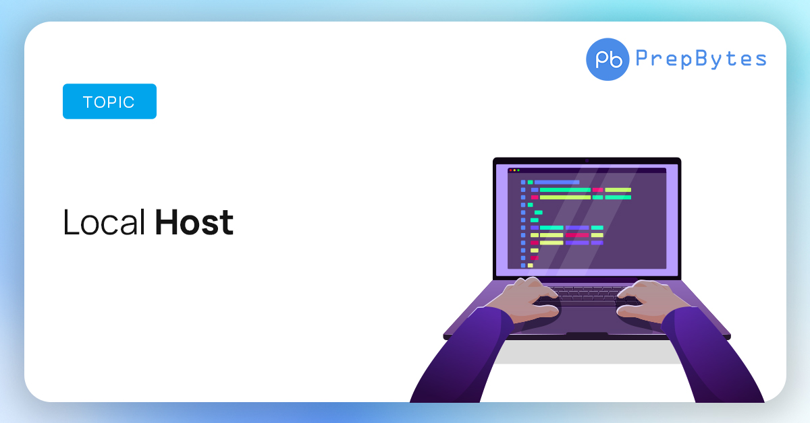
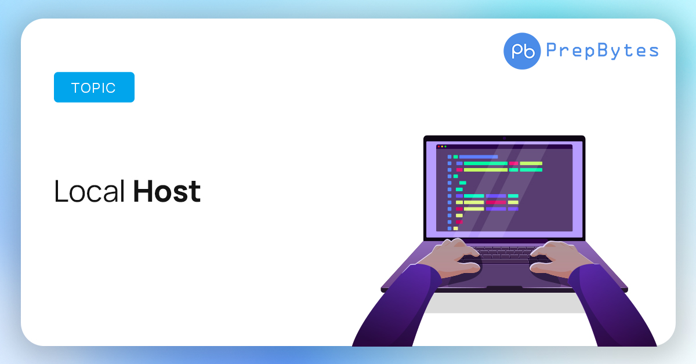

local host
localhost
In computer, localhost is a hostname that refers
to the current computer used to access it. It is used to access
the network services are running on the host via the loopback
network interface. Using the loopback interface
bypasses any local network interface hardware.
Loopback  The local loopback mechanism may be used to run a network service on a host without requiring a physical network interface, or without making the service accessible from the networks the computer may be connected to. For example, a locally installed
website may be accessed from a Web browser by the URLlocal host to display its home page.
The name localhost resolves to the IPv4 loopback address 127.0.0.1, and to the IPv6 loopback address ::1.
Name resolution 
IPv4 network standards reserve the entire address
block
The local loopback mechanism may be used to run a network service on a host without requiring a physical network interface, or without making the service accessible from the networks the computer may be connected to. For example, a locally installed
website may be accessed from a Web browser by the URLlocal host to display its home page.
The name localhost resolves to the IPv4 loopback address 127.0.0.1, and to the IPv6 loopback address ::1.
Name resolution 
IPv4 network standards reserve the entire address
block /8 (more than 16 million addresses) for loopback purposes.[2] That means any packet sent to any of those addresses is looped back. The address 127.0.0.1 is the standard address for IPv4 loopback traffic; the rest are not supported by all operating systems. However, they can be used to set up multiple server applications on the host, all listening on the same port number. The IPv6 standard assigns only a single address for loopback: ::1.
The resolution of name localhost one or more
IP addresses is configured by the following l
ines in the operating system's hosts file:
127.0.0.1 localhost
::1 localhost
The may also be by Domain Name System
(DNS)servers, but queries for this name sòhould be resolved locally,
and should not be to remote name servers.
In addition tothe mapping of localhost to
the addresses (127.0.0.1 and ::1), localhost may also be mapped to other IPv4 (loopback) addresses and it is also possible to assign other, or additional, names to any loopback address. The mapping of localhost to addresses other than the designated loopback address range in the hosts file or in DNS is not guaranteed to have the desired effect, as applications may map the name internally.
In the Domain Name System, name ocalhost is reserved as
a top-level domain name, originally set aside to avoid confusion
with the hostname used for loopback purposes.[3] IETF standards
prohibit domain name registrars from assigning the name localhost.
IETF standards
The name localhost is reserved for loopback 4purposes by RFC 6761 (Special-Use Domain Names),[4] which achieved the Proposed Standard maturity level in February 2013. The standard sets forth a number of special considerations governing the use of the name in the Domain Name System:
An IPv4 or IPv6 address query for the name localhost must always resolve to the respective loopback address, which is specified in a separate standard.
Applications may resolve the name to a loopback address themselves, or pass it to the local name resolver mechanisms.
When a name resolver receives an A or AAAA query for localhost, it should return the appropriate loopback addresses, and negative responses for any other requested record types. Queries for localhost should not be sent to caching name servers.
To avoid Zburdening the Name System root servers with traffic, caching name servers should never request name server records for localhost, or forward resolution to authoritative name servers.
DNS registrars are precluded from delegating domain names in the top-level domain localhost.
When authoritative name servers receive queries for 'localhost' in spite of the provisions mentioned resolve them appropriately.
The IPv4 loopback addresses are reserved within the IPv4 address space by the IETF "Special Use IPv4 Addresses" standard (RFC 5735).[5] The reservation can be traced back to the November 1986 "Assigned Numbers" standard (RFC 990).
In contrast, the IETF "IP Version 6 Addressing Architecture"
standard (RFC 4291) seserves the single IPv6 loopback address
::1 within the IPv6 address space. The standard precludes the assignment
of that to any physical interface, as well as its use as the source
or destination address in any packet sent to remote hosts. Any such packet that
is erroneously is not supposed to be routed, and should dropped
by
all routers or hosts that receive it.
Packet processing
he processing of any packet sent to a loopback address, is implemented in the link layer of the TCP/IP stack. Such packets are never passed to any network interface controller (NIC) or hardware device driver and must not appear outside of a computing system, or be routed by any router. This permits software testing and local services in the absence of any hardware network interfaces.
Looped-back packets are distinguished from any other packets traversing the TCP/IP stack only by the special IP address they were addressed to. Thus, the services that ultimately receive them respond according to the specified destination. For example, an HTTP service could route packets addressed to 127.0.0.99:80 and 127.0.0.100:80 to different Web servers, or to a single server that returns different web pages. To simplify such testing, the hosts file may be configured to provide appropriate names for each address.
Packets received on a non-loopback interface with a loopback source or destination address must be dropped. Such packets are sometimes referred to as Martian packets.[6] As with any other bogus packets, they may be malicious and any problems they might cause can be avoided by applying bogon filtering.
Special cases
The releases of MySQL database differentiate between the use of the hostname localhost and the use of the addresses 127.0.0.1 and ::1.[7] When using localhost as the destination in a client connector interface of an application, the MySQL application programming interface connects to the database using a Unix domain socket, while a TCP connection via the loopback interface requires the direct use of the explicit address.
One notable to the use of the 127.0.0.0/8 addresses is their use in Multiprotocol Switching (MPLS) traceroute error detection, in which their property of not being routable provides a convenient means to avoid delivery of faulty packets to end users.